素描
以鉛筆、炭精筆、炭筆為主要媒材，在紙上呈現出明暗及立體感變化。素描為繪畫的基礎，重點包含比例及明暗變化，透過不同角度的線條表現出物體的質感以及立體感。
Go to my paintings
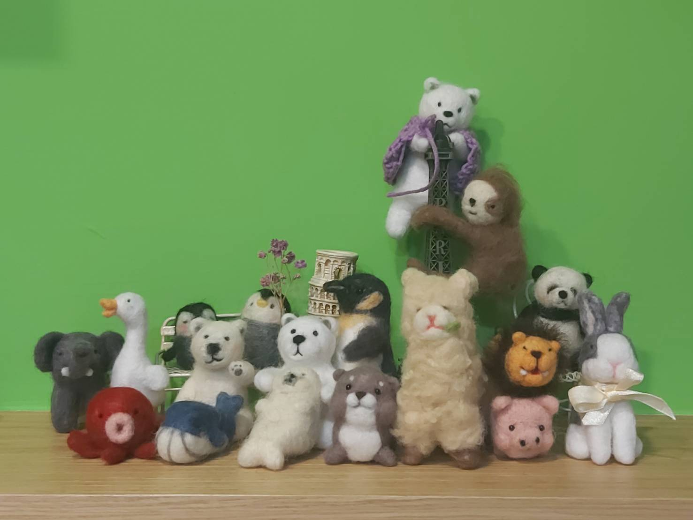
羊毛氈
羊毛氈以羊毛為主要材料，羊毛纖維有無數的鱗片組織，在遇水加壓時會張開，而不斷的加壓、加水後會緊密地糾合，纏繞在一起。形成了堅固的氈化物。或是使用特殊戳針進行戳刺，讓羊毛纖維在過程中不斷地打結，任意戳出想要的形狀。
Go to my collections
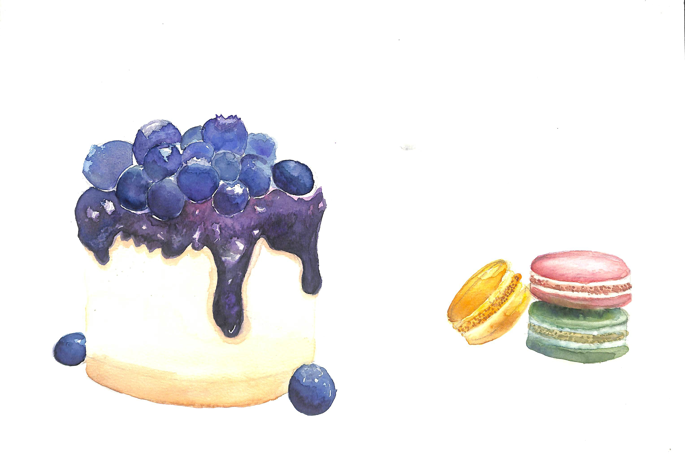
水彩
利用阿拉伯膠等結合劑，和色粉混合攪拌而成的畫材，並可分成膠狀液體和塊狀固體兩種。根據顏料的透明度，可分成透明水彩、不透明水彩或半透明水彩三種，此區展示的皆為透明水彩的創作及臨摹。
Go to my paintings
.jpg)
藍染
使用天然的植物作為染劑，重複利用氧化還原反應讓布染色。藍染植物主要分為下列四科：爵床科植物馬藍、豆科植物木藍、蓼科植物蓼藍、十字花科植物菘藍。有多種技法，包含縫染、夾染、畫蠟防染、型糊藍染、素染。
Go to my collections

色鉛筆
台中刑務所演武場
選擇刑務所演武場作為主題是因為我很喜歡的市集每個月都會在那邊舉辦，只要假日有時間，我也都會去那邊逛逛。除此之外，也很喜歡那邊整體的氛圍以及建築。
Previous Next
以前沒有特別學過素描，上學期選了文創開的基礎素描，課堂中使用了不同的工具畫素描。包含了鉛筆、色鉛筆、代用針筆。嘗試了靜物寫生、風景畫以及人物速寫。。
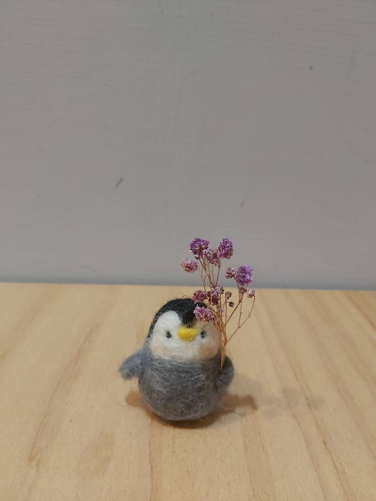
給你一束花! 小企鵝
平時對於花藝也有興趣，也會去花市買花回家乾燥。因為想將喜歡的兩樣東西結合在一起，所以做了這個作品。
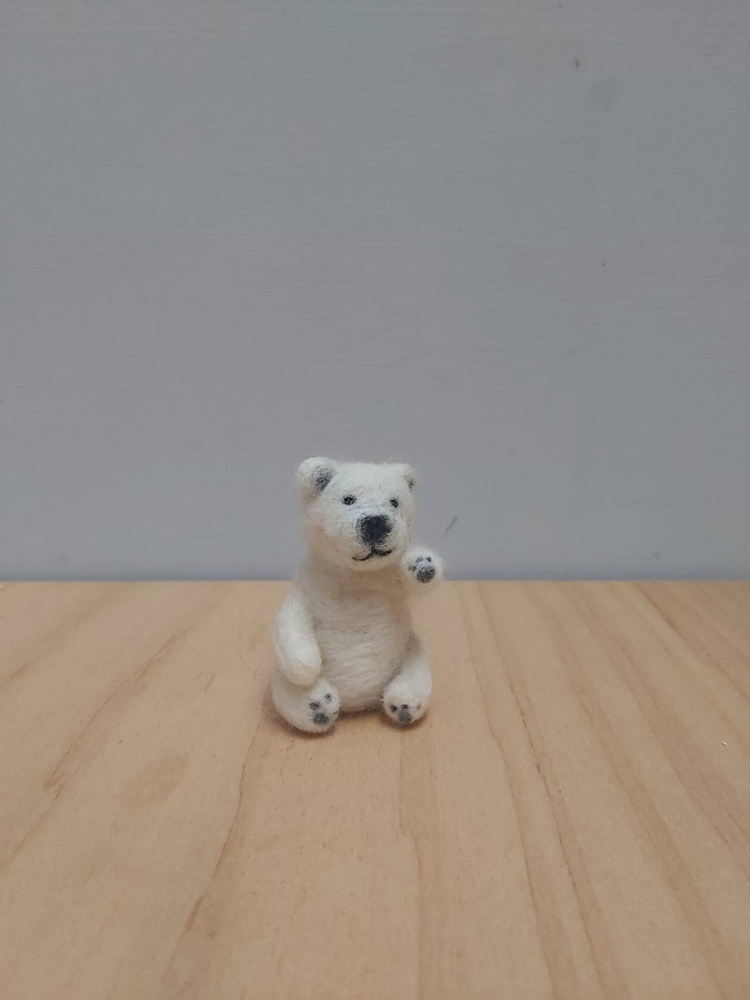
嗨!我是北極熊!
之前製作的過程一直覺得很難做出自然暈染的腮紅，有是過不同的方式，但是都不是很自然。有次突然想嘗試運用水彩筆沾取過期的腮紅膏點綴在作品上，結果意外的很符合我預期的效果，還同時可以運用過期的彩妝品。
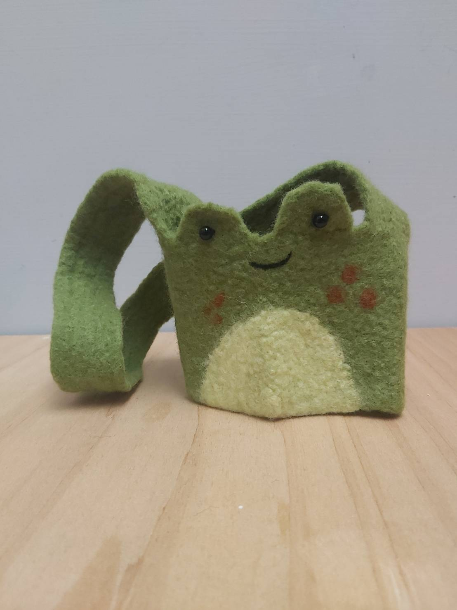
青蛙飲料提袋
這個作品是參加課程時做的，也是第一次嘗試濕氈的技法。嘴巴的部分用針氈的方式刺上去，結合兩種不同方式做出不同的感覺。
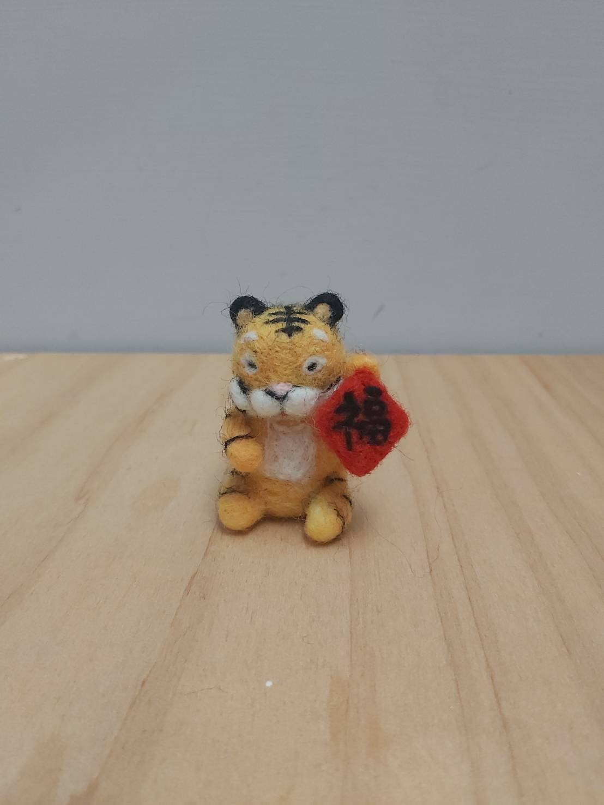
招財納福 虎年行大運
剛好今年是虎年，所以決定做一隻老虎。結合春聯的元素，期望虎年都能充滿福氣。
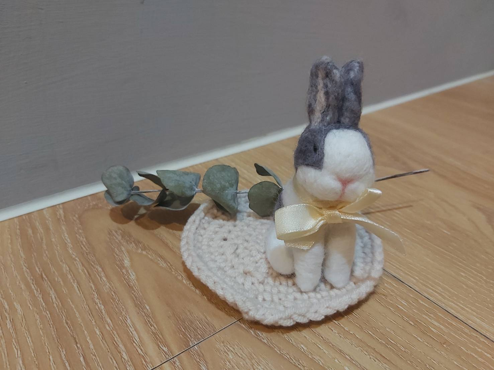
繫著緞帶的兔子
結合緞帶這個元素，呈現兔子特別的氣質。
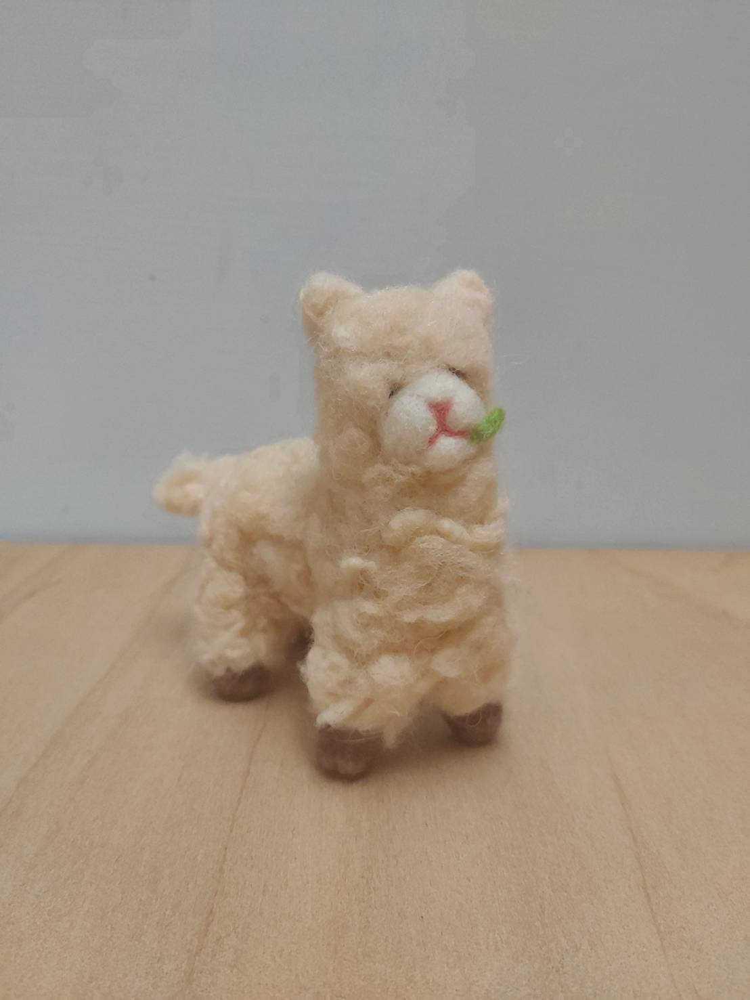
羊駝進食中!
利用捲捲毛呈現羊駝蓬鬆的毛，因為內部構造有包入毛根，所以整體更挺，也能隨意調整脖子或是腳的角度。
Previous Next
這學期的水彩課使用的是透明水彩，作品大多透過層層疊加以及渲染的技法呈現。使用的是新韓的透明水彩以及Macro Wave的水彩筆。
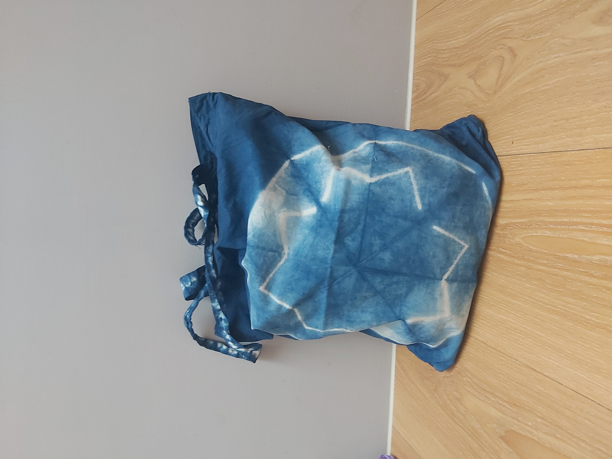
縫染提袋
使用車縫的方式先做出防染的部分，再進行染布流程。
.jpg)
漸層染
調配淺色染缸，一層一層進行染布，同時依照染布次數增加，減少浸泡在染液的時間。
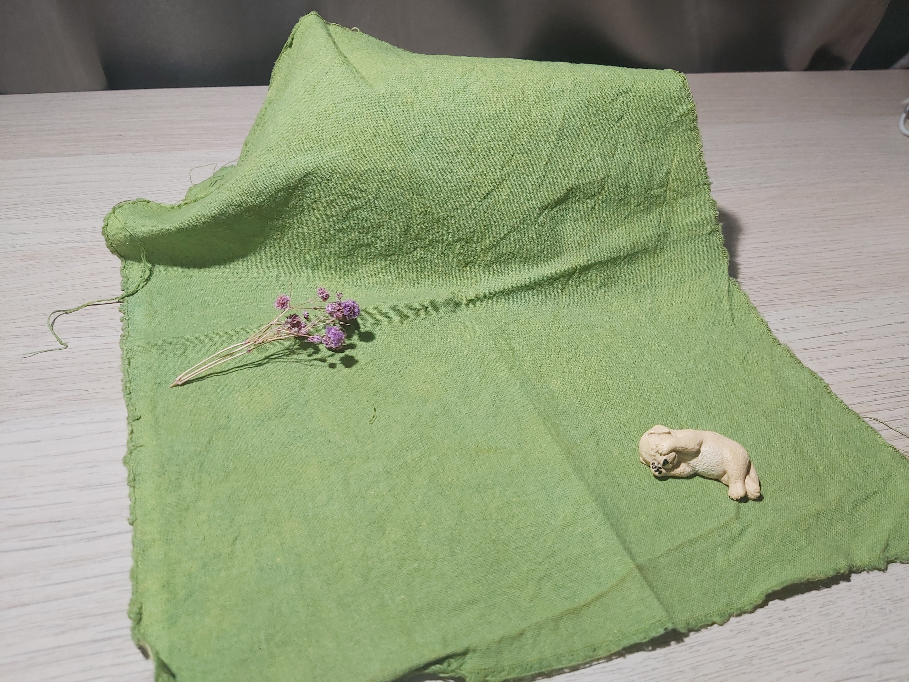
薑黃染+藍染
先將布用藍染染劑染完後，隔周使用薑黃染液再染色。
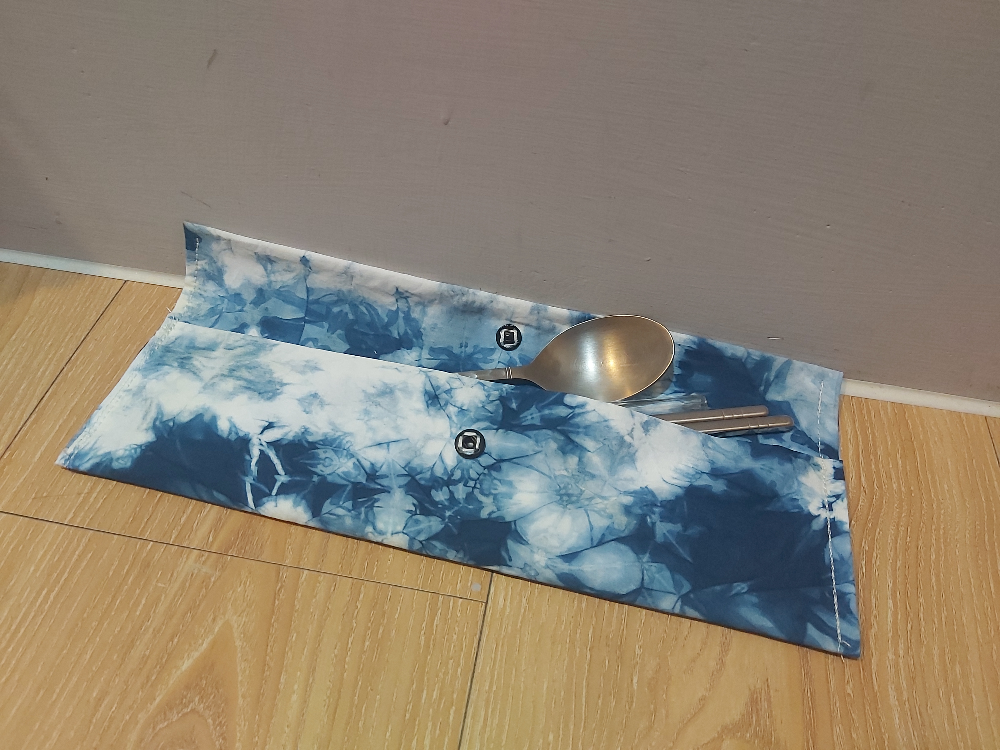
雲染餐具袋
雲染是我最喜歡的技法。每次染出來的圖案都是獨一無二的，染完後在攤開布的瞬間都有不同的機驚喜。
Previous Next
藍染使用的是天然的染料，製作過程也相當繁複，需要透過不斷的浸泡染液、空氣氧化，以及水中氧化。經過六次循環後才能用清水漂洗，每隔兩天需要再漂洗，將雜質洗去。最終使用冰醋酸定色才算完成。
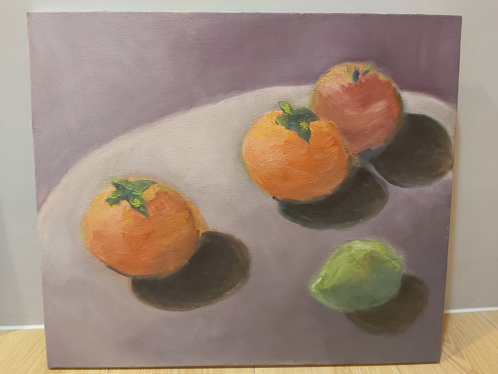
水果
畫布大小:10F
第一次嘗試油畫是在微型通識課，畫了一次就覺得這個媒材很特別，想再繼續嘗試，所以選了夜文創開的油畫課。也是第一次嘗試這麼大的畫布。

酒瓶
有特別注意酒瓶在燈光下的影子，也試著嘗試表現瓶子的材質。
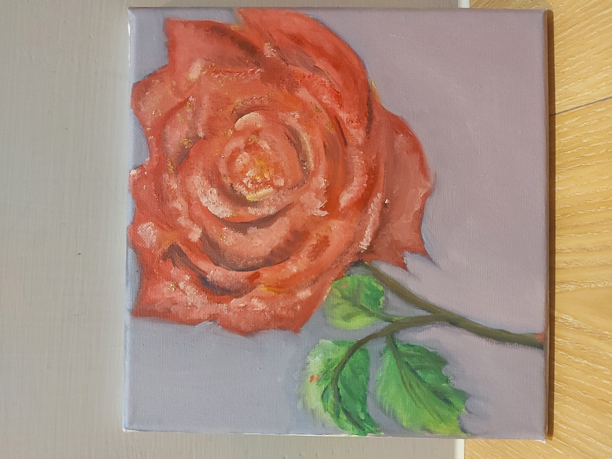
玫瑰
在花瓣上使用了金箔作為點綴。金箔先和膠混合均勻後，再使用畫筆點綴。
Previous Next
其他媒材包含了粉彩、油畫棒、毛線及麻繩。粉彩使用自製型版搭配用美工刀刮下來的粉彩塗抹繪成。油畫棒屬於較新穎的創作媒材，介於蠟筆及油畫之間，融合了兩種媒材的優點。能做出微立體的效果，讓作品更活潑。
mail
emily04092002@gmail.com
call
0975347902